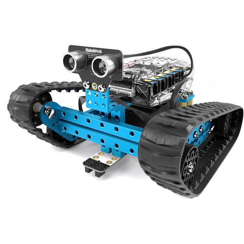
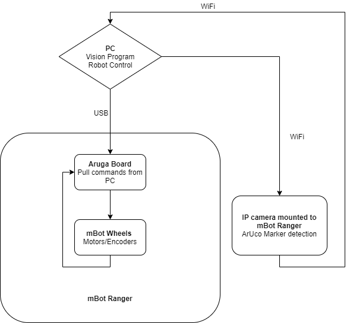
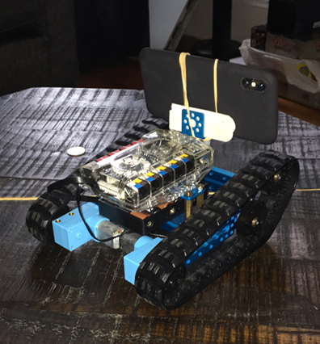
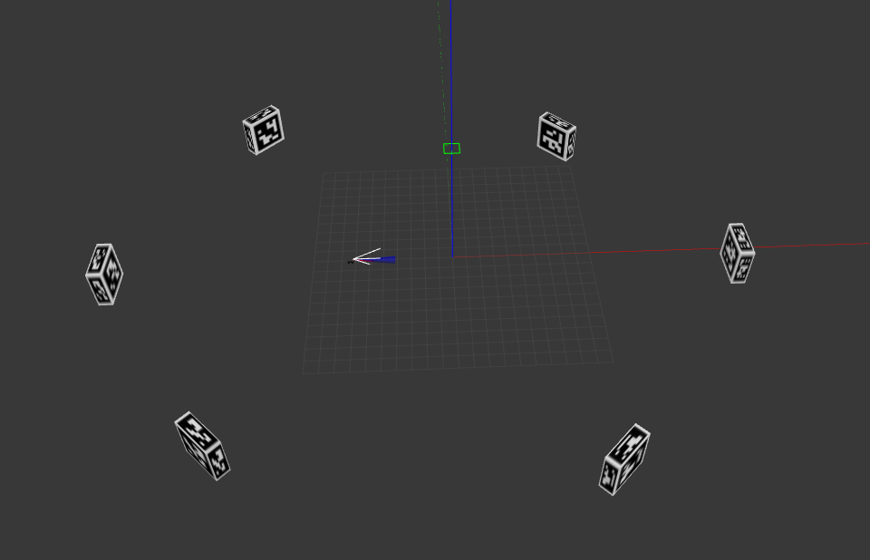
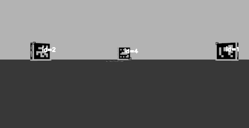
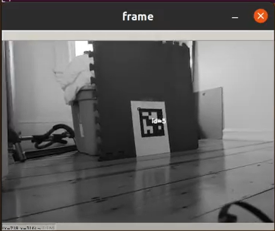

ArUco Navigation and Follow (C++, Python, Gazebo, OpenCV, ArUco) (Figures in process)
Github Repository

mBot Ranger platform used in project
Overview:
Worked with a team of 4 to design a system to navigate a map filled
with ArUco Markers. Before physical implementation, the design was
tested in Gazebo. The physical platform of the project was an mBot Ranger
and the sensor used was an RGB camera (IP camera application running
on a smartphone). The platform used the OpenCV and ArUco libraries
to navigate the map and recognize the markers. The bot searches for
the first marker (ordered by ArUco Marker ID) and navigate to it and
repeat until all markers are visited.
Some applications that this could serve is a robot navigating to a
POI and fulfilling a task, then going on to the next. Such
applications are found a lot in warehouse automation.
The design can also serve as a marker follower and would be ideal
for primary and secondary robot navigation.

Flow chart of solution design

Project mBot Ranger with fitted IP camera (smartphone)
Purpose:
Collaborate with a team to produce an original solution to
a problem.
Design a system that can allow for navigation to points of
interest that are within range.
Challenges:
Designing original Gazebo world with ArUco Markers in place
Port code from simulation platform to physical mBot Ranger
platform.
Adjust design for physical implementation (sensor noise,
mechanical issues, etc.)


Gazebo simulation world with hexagonal ArUco Marker arrangement and
their detection by simulated robot

After simulation validation, the code was implemented
with the physical mBot Ranger and IP Camera
Outcome:
Used Gazebo to simulate and validate a control algorithm to
implement physically. Created a design that allows for POIs
(marked with ArUco tags)to be visited sequentially with a mobile
robot equipped with an RGB camera.
Navigation Algorithm:
Search for next ArUco (corresponding ID) by rotating
Once found (match center of marker with center of input
frame)
Continue towards marker with periodic adjustments to
trajectory if centers are misaligned outside of a threshold
Repeat with next ArUco ID
Follow Algorithm:
Search for ArUco to follow (corresponding ID) by rotating
Once found (match center of marker with center of input
frame)
Continue towards marker with periodic adjustments to
trajectory if centers are misaligned outside of a threshold
Stop if within a certain range of marker to avoid collision
Skills Learned and Personal Contributions:
Simulation robot control program in C++
Real world robot control program in Python
Implementation and porting of simulation program to real world
Simulation to real world implementation
Gazebo simulation/world creation
OpenCV and ArUco library implementation (C++ and Python)